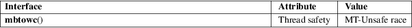

mbtowc − convert a multibyte sequence to a wide character
Standard C library (libc, −lc)
#include <stdlib.h>
int mbtowc(wchar_t *restrict pwc, const char s[restrict .n], size_t n);
The main case for this function is when s is not NULL and pwc is not NULL. In this case, the mbtowc() function inspects at most n bytes of the multibyte string starting at s, extracts the next complete multibyte character, converts it to a wide character and stores it at *pwc. It updates an internal shift state known only to the mbtowc() function. If s does not point to a null byte ('\0'), it returns the number of bytes that were consumed from s, otherwise it returns 0.
If the n bytes starting at s do not contain a complete multibyte character, or if they contain an invalid multibyte sequence, mbtowc() returns −1. This can happen even if n >= MB_CUR_MAX, if the multibyte string contains redundant shift sequences.
A different case is when s is not NULL but pwc is NULL. In this case, the mbtowc() function behaves as above, except that it does not store the converted wide character in memory.
A third case is when s is NULL. In this case, pwc and n are ignored. The mbtowc() function resets the shift state, only known to this function, to the initial state, and returns nonzero if the encoding has nontrivial shift state, or zero if the encoding is stateless.
If s is not NULL, the mbtowc() function returns the number of consumed bytes starting at s, or 0 if s points to a null byte, or −1 upon failure.
If s is NULL, the mbtowc() function returns nonzero if the encoding has nontrivial shift state, or zero if the encoding is stateless.
For an explanation of the terms used in this section, see attributes(7).

This function is not multithread safe. The function mbrtowc(3) provides a better interface to the same functionality.
C11, POSIX.1-2008.
POSIX.1-2001, C99.
The behavior of mbtowc() depends on the LC_CTYPE category of the current locale.
MB_CUR_MAX(3), mblen(3), mbrtowc(3), mbstowcs(3), wcstombs(3), wctomb(3)